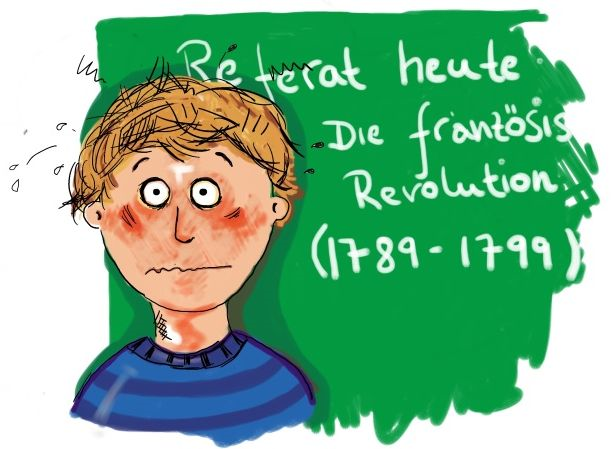

Angststörungen im Kindes- und Jugendalter
Soziale Angststörung
Der 12-jährige Lukas hat ein schlechtes Zeugnis bekommen. Die
Lehrer haben vor allem angemerkt, dass er am Unterricht nicht
teilnimmt. Lukas aber hat große Angst sich im Unterricht zu
melden. Er befürchtet, dass er etwas Peinliches sagen könnte und
dass die anderen Schüler ihn dann sofort auslachen. Er versucht
sich auch in der Pause immer möglichst unauffällig zu verhalten um
sich nicht vor den anderen zu blamieren. Seine Mutter fährt ihn
jeden Morgen zum Gymnasium, weil er sich nicht mehr traut mit dem
Bus zu fahren. Im Bus hat er immer das Gefühl, die anderen Kinder
und Jugendlichen würden über ihn reden und ihn auslachen. Lukas
ist oft alleine und leidet sehr darunter. Er hat eine
Soziale Angststörung.
Kinder- und Jugendliche mit einer
Sozialen Angststörung haben große Angst
vor anderen Kindern und vor Erwachsenen, ganz besonders dann, wenn
sie diese nicht so gut kennen. Sie haben Angst, dass die anderen
schlecht von ihnen denken könnten, dass sie schlecht über sie
reden könnten. Sie fürchten sich davor, etwas zu tun oder zu
sagen, was ihnen peinlich sein könnte oder wobei sie sich
blamieren könnten. Besonders schwierige Situationen sind zum
Beispiel sich in der Schule melden, mit anderen, nicht bekannten
Kindern spielen, etwas beim Lehrer nachfragen oder fremde
Erwachsene ansprechen um z.B. nach dem Weg zu fragen. Kinder mit
einer sozialen Angststörung
ziehen sich oft zurück, sind viel alleine und leiden oft sehr
darunter.
